预备工作
安装git
从git官网下载符合自己系统的版本
本文不再详细阐述Git的安装方法，可以按照菜鸟教程或者廖雪峰的教程进行安装。
安装node.js
从官网下载
选择下载长期支持版本

下载安装完成后会安装两个工具，分别是node和npm。按下win+R输入powershell，验证下载是否成功
1 | node -v |
输出结果如下图所示：
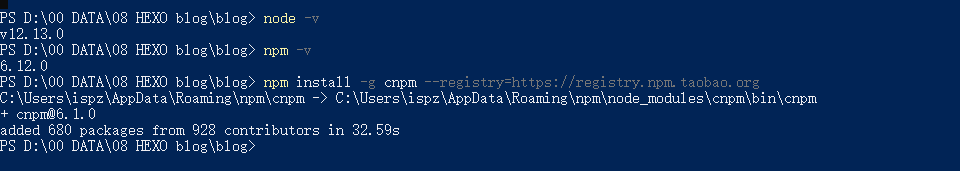
安装cnpm
由于npm的下载速度缓慢，所以需要将安装国内镜像cnpm，仓库为淘宝仓库
1 | npm install -g cnpm --registry=https://registry.npm.taobao.org |
等待安装完成，输入
1 | cnpm -v |
检验安装是否成功
安装Hexo
hexo初始化
在本地电脑中创建文件夹用来存储博客内容
1 | D:\00 DATA\08 HEXO blog\blog |
在powershell中进入当前文件夹，输入代码安装hexo
1 | cnpm install -g hexo-cli |
等待安装完成，安装完成后显示如下：
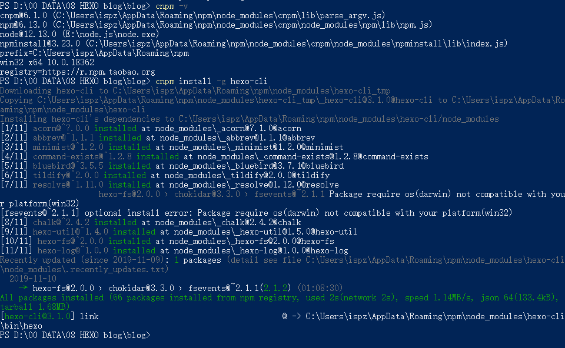
输入
1 | hexo -v |
检测hexo是否安装成功。
如上图就代表安装成功
hexo初始化及本地预览
完成hexo安装后，需要实现hexo初始化，并生成样例博客。在blog的文件夹下输入
1 | hexo init |
如果没有更改host，github下载速度较慢需要等待2分钟左右，若未报错则安装成功。安装成功后输入指令
1 | hexo s |
可以在 http://localhost:4000 进行预览。
hexo建立新博客
在完成上述的初始化工作之后，可以建立自己的第一篇文章。输入命令：
1 | hexo n "我的第一篇hexo博客" |
双引号中的内容为博客名字，其存储位置在
.\source_posts
查看博客的保存位置
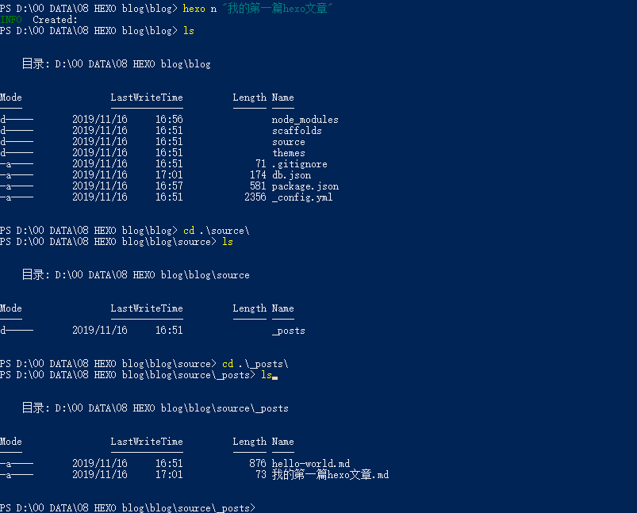
有生成的.md文件，对.md文件使用markdown进行编辑，保存（这里不再详细说明.md文件的编辑方法，可以用Typora工具、vim等），在blog文件夹下输入三条指令
1 | hexo clean |
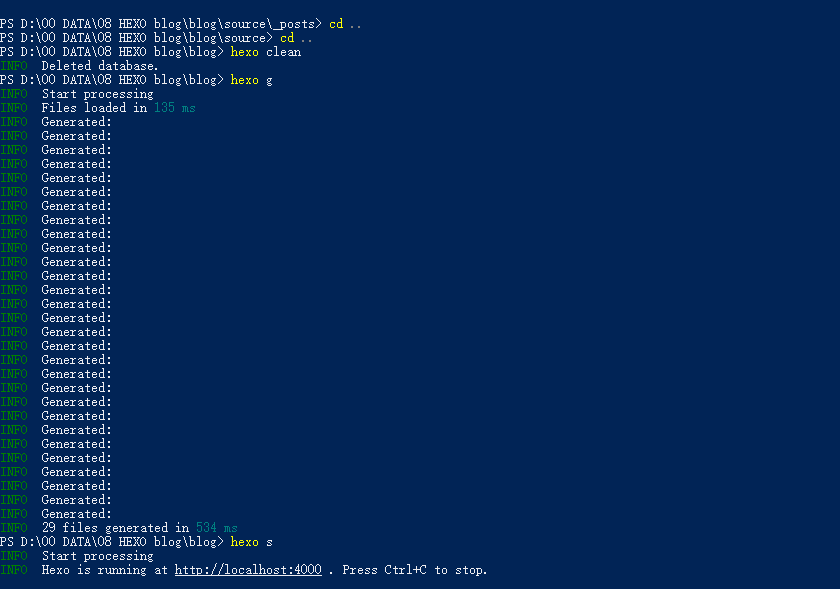
可以在 http://localhost:4000 端口查看生成效果。
部署至GitHub
建立Git仓库并安装Git插件
在自己的github账户下建立一个repository输入名字，这里需要注意你的repository名字必须是 [账户名].github.io
安装git插件，在power客户端下输入指令：
1 | cnpm install --save hexo-deployer-git |
安装成功，提示如下：
设置配置文件
部署到github远端需要修改hexo文件下的 _config.yml 文件，打开文件找到deploy位置
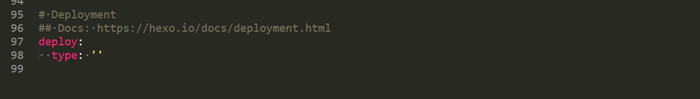
修改类型属性(type)，添加两个属性 *repo和 branch *
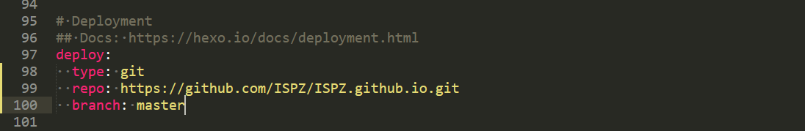
其中repo属性对应git地址，branch对应分支选项。
远端部署
修改_config.yml文件完成，需要将本地的博客部署到github上，使用命令
1 | hexo d |
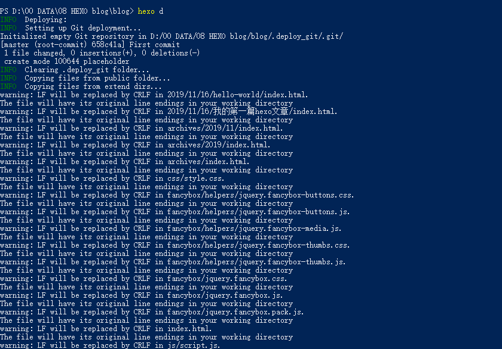
等待….出现登录页，输入账号密码
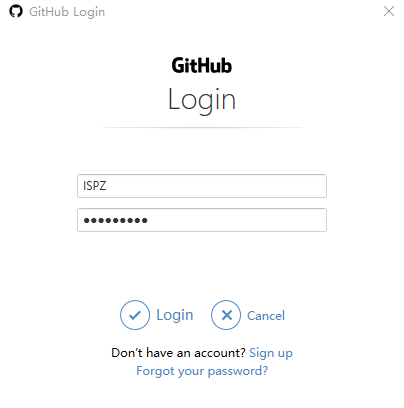
部署完成
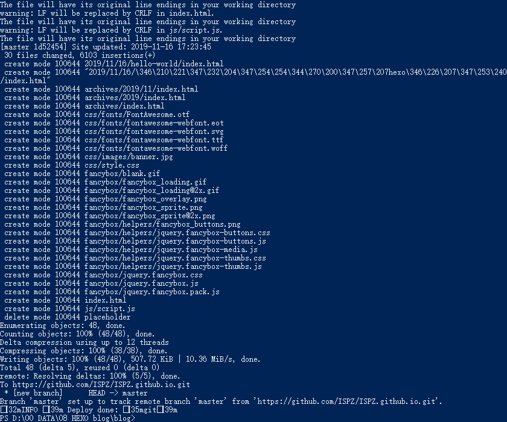
主题美化
主题下载
hexo自带的主题为landspace，主题样式可以更改，这里选择下载yilia主题。在blog文件夹下输入命令：
1 | git colne https://github.com/litten/hexo-theme-yilia .\theme\yilia |
其中 网址为下载地址，网址后的路径为主题的存储位置。下载完成如下：
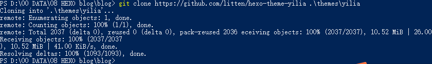
进入theme文件夹下，查看主题是否存储完成：
更改主题
下载完成后需要修改blog文件夹下的_config.yml文件，打开找到 theme属性
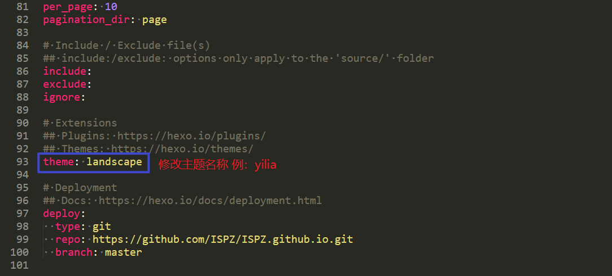
若未更改过主题，则显示为theme:landspace, landspace为主题名称，将其修改为 theme:yilia，在窗口输入三行指令在本地查看修改情况：
1 | hexo clean |
若未出错，可以将其推向github，输入指令 ：
1 | hexo d |
遇到的错误
在hexo初始化时遇到一些小错误，输入初始化指令** hexo init**，出现错误结果如下：
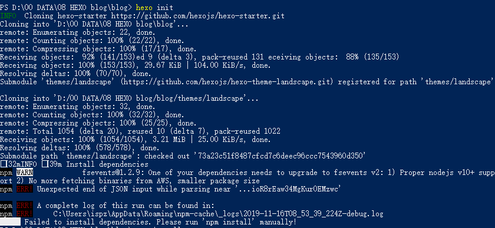
按照错误提示输入*npm install * 仍报错
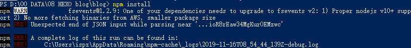
考虑到可能是连不上服务器所导致的，所以选择输入指令cnpm install
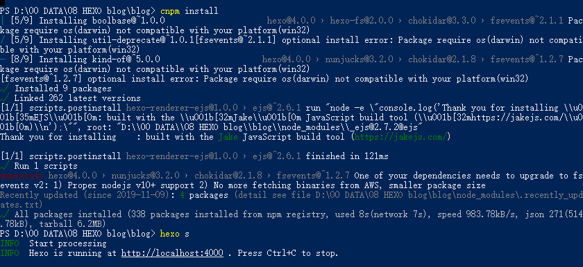
问题解决